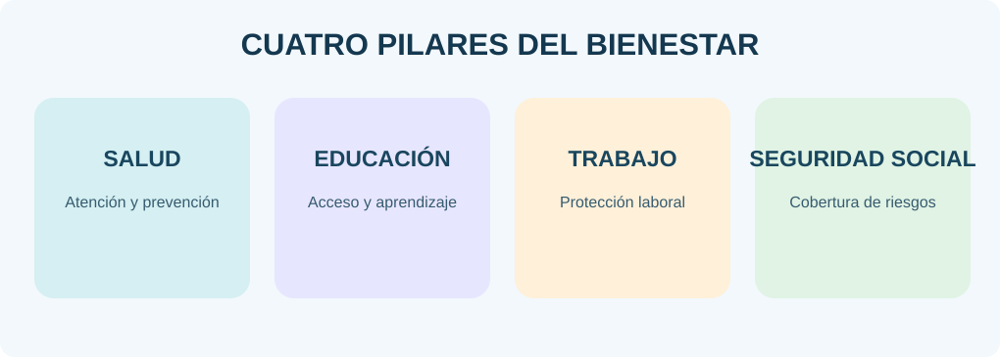
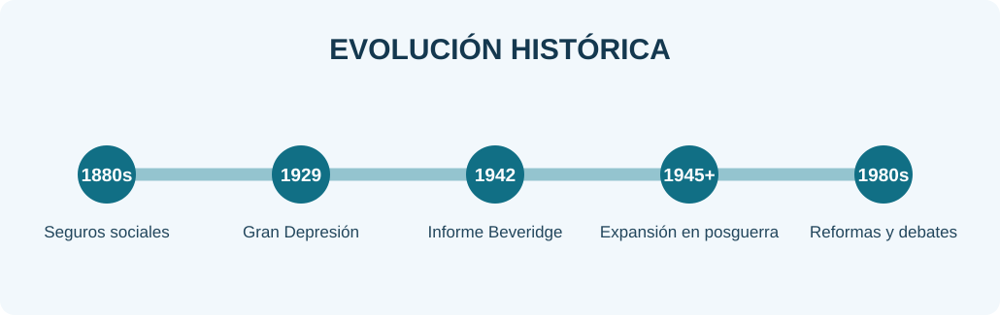
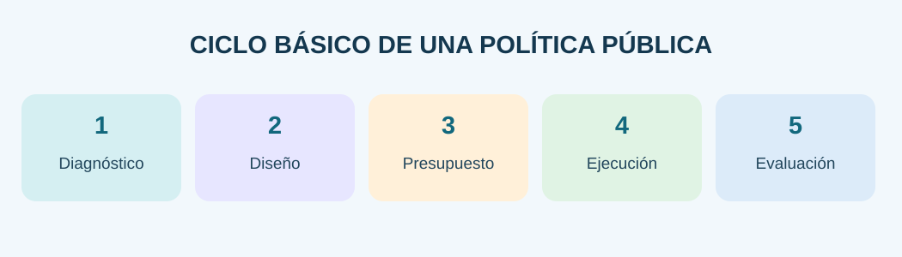

Identificar y caracterizar los principales elementos del Estado de bienestar en su contexto histórico para analizar políticas económicas, instituciones, normas y relaciones de poder.
Basado en SEP · Ciencias Sociales III · Primera progresión. Los casos regionales son hipotéticos.Introducción: bienestar, necesidades y desigualdad
El bienestar social es un fenómeno multidimensional: no basta considerar los ingresos. También importan el acceso efectivo a salud y educación, la vivienda segura, la disponibilidad de agua, el tiempo de cuidado, el ambiente y la participación en decisiones públicas. Un territorio puede producir riqueza y, al mismo tiempo, presentar carencias entre distintos grupos de población.
Las necesidades individuales se convierten en problemas colectivos cuando afectan sistemáticamente a numerosas personas y requieren coordinación social. Las Ciencias Sociales analizan su origen, las instituciones que intervienen y la manera en que los recursos y el poder se distribuyen.
La desigualdad describe diferencias en recursos, oportunidades o resultados. No toda diferencia constituye por sí misma una injusticia; para evaluarla deben analizarse las condiciones de origen, las barreras de acceso y el ejercicio efectivo de derechos. La pobreza, por su parte, requiere indicadores específicos y no se reduce a una percepción personal.
Actividades para resolver en el cuaderno
Escribe fecha, título, respuestas razonadas y fuente consultada. No basta copiar: explica con tus palabras y agrega ejemplos cuando corresponda.
- Define bienestar material e inmaterial y escribe tres ejemplos de cada uno.
- Dibuja un mapa de necesidades de tu colonia o comunidad y clasifícalas en salud, educación, ingreso, vivienda y ambiente.
- Redacta un párrafo que distinga desigualdad de pobreza; explica con un ejemplo local.
- Construye una tabla con problema, población afectada, posible causa y evidencia necesaria.
Estado, gobierno y Estado de bienestar
El Estado es una organización política y jurídica asentada en una población y un territorio, con instituciones y capacidad de ejercer autoridad soberana. El gobierno es el conjunto de autoridades que dirige temporalmente las instituciones. Esta diferencia es importante: una política puede cambiar con los gobiernos, mientras que los derechos y las obligaciones públicas forman parte de un marco institucional más duradero.
El Estado de bienestar es una orientación de política pública mediante la cual se organizan mecanismos de protección social, redistribución y provisión de servicios. Su alcance depende de decisiones históricas: algunos sistemas priorizan prestaciones universales y otros vinculan el acceso a contribuciones laborales o a criterios de elegibilidad.
La ciudadanía tiene derechos, obligaciones y espacios para participar. Los derechos sociales establecen objetivos de protección; su eficacia también depende de instituciones, recursos, procedimientos, cobertura y calidad. Por eso conviene diferenciar un derecho reconocido en la ley de su cumplimiento cotidiano.
El mercado, el Estado, las familias y las comunidades contribuyen al bienestar, pero no siempre con los mismos recursos ni responsabilidades. El análisis académico compara esas funciones sin suponer que una sola organización resuelve todos los problemas.

Recurso audiovisual de este capítulo
Actividades para resolver en el cuaderno
Escribe fecha, título, respuestas razonadas y fuente consultada. No basta copiar: explica con tus palabras y agrega ejemplos cuando corresponda.
- Elabora un cuadro comparativo de Estado, gobierno, ciudadanía y Estado de bienestar con definición y ejemplo.
- Escribe una situación en que exista un derecho formal pero falte acceso efectivo; propone una solución.
- Construye un mapa conceptual que relacione protección social, derechos, impuestos e instituciones.
- Explica en diez renglones qué responsabilidades corresponden al Estado y cuáles a la sociedad.
Fichas didácticas interactivas
Selecciona la tarjeta para revelar la respuesta. Utiliza los controles para avanzar o retroceder. Al final, elige tres conceptos y escribe un ejemplo real de cada uno.
Antecedentes históricos y consolidación
La industrialización incrementó la producción y transformó la vida urbana, pero también expuso riesgos asociados al trabajo asalariado, accidentes, enfermedad y pérdida de ingresos. En la Alemania de la década de 1880 se desarrollaron esquemas obligatorios de aseguramiento social dirigidos a trabajadores.
La Gran Depresión iniciada en 1929 mostró que una caída de la actividad económica podía provocar desempleo masivo y necesidades que superaban la capacidad de respuesta individual. Las políticas de recuperación y los debates sobre intervención pública adquirieron mayor peso.
En 1942, el Informe Beveridge en Reino Unido propuso una protección social más amplia. Después de la Segunda Guerra Mundial, diversos países expandieron servicios y seguros sociales, aunque con modelos y ritmos diferentes. Entre los años setenta y ochenta se intensificaron debates sobre inflación, deuda, crecimiento, gasto y sostenibilidad de estos sistemas.
La historia del bienestar no sigue una línea idéntica en todas las naciones: debe estudiarse considerando instituciones previas, condiciones económicas, demandas de trabajadores y decisiones políticas.

Recurso audiovisual de este capítulo
Actividades para resolver en el cuaderno
Escribe fecha, título, respuestas razonadas y fuente consultada. No basta copiar: explica con tus palabras y agrega ejemplos cuando corresponda.
- Copia una línea del tiempo de seis acontecimientos desde 1880 hasta la década de 1980; explica la importancia de cada uno.
- Compara dos factores de la Gran Depresión con dos cambios posteriores a 1945.
- Describe una diferencia entre los seguros sociales tempranos y la ampliación del bienestar de posguerra.
- Escribe una pregunta histórica que podrías investigar con una fuente documental confiable.
Pilares y modelos de protección social
La protección social incluye instrumentos para prevenir o reducir consecuencias económicas de enfermedad, vejez, discapacidad, desempleo y otras contingencias. Puede implementarse mediante seguros contributivos, programas financiados con impuestos y servicios públicos. Los modelos mezclan estos instrumentos de manera diferente.
La salud pública comprende prevención, atención e infraestructura. La educación desarrolla capacidades y amplía oportunidades; su calidad, permanencia y accesibilidad son tan relevantes como el número de escuelas. La protección de ingresos puede comprender pensiones, transferencias y seguros asociados al trabajo.
La universalidad busca cubrir a toda la población de acuerdo con reglas generales, mientras que la focalización dirige recursos hacia grupos determinados. Ambas requieren evaluación; una prestación puede tener cobertura formal, pero resultar inaccesible por distancia, trámites, costos de traslado o falta de personal.
Los pilares se relacionan: una enfermedad puede reducir ingresos familiares, provocar ausentismo escolar y generar gastos. De ahí que las políticas sociales deban coordinar sectores y no tratar cada necesidad de forma aislada.
Recurso audiovisual de este capítulo
Actividades para resolver en el cuaderno
Escribe fecha, título, respuestas razonadas y fuente consultada. No basta copiar: explica con tus palabras y agrega ejemplos cuando corresponda.
- Elabora una matriz con cuatro pilares: salud, educación, protección de ingresos y vivienda; incluye objetivo, institución y desafío.
- Explica con un caso inventado qué diferencia existe entre cobertura formal y acceso efectivo.
- Representa mediante flechas la relación entre enfermedad, trabajo e ingresos.
- Discute por escrito una ventaja y una limitación de la universalidad y de la focalización.
Políticas públicas: diseño, presupuesto y evaluación
Una política pública es una secuencia de decisiones y acciones colectivas: identificación del problema, diagnóstico, formulación de alternativas, asignación de recursos, puesta en práctica y evaluación. No basta con anunciar un programa; se necesita definir población objetivo, responsables, calendario, reglas de operación y resultados esperados.
El presupuesto público expresa prioridades y restricciones. Los ingresos fiscales y otras fuentes permiten financiar servicios, pero la cantidad de dinero no garantiza por sí sola buenos resultados: importan la transparencia, la coordinación y el uso eficiente de los recursos.
Los indicadores permiten valorar cobertura (cuántas personas reciben atención), calidad (cómo se proporciona), eficacia (si se cumplió una meta), eficiencia (relación entre recursos y resultados) y equidad (cómo se distribuyen los beneficios entre grupos). Un indicador debe ser comprensible, medible y vinculado con el objetivo.
Las decisiones públicas involucran relaciones de poder y negociación entre autoridades, organizaciones, empresas, sectores sociales y ciudadanía. La participación puede aportar información local, ayudar a identificar problemas y vigilar compromisos.

Recurso audiovisual de este capítulo
Actividades para resolver en el cuaderno
Escribe fecha, título, respuestas razonadas y fuente consultada. No basta copiar: explica con tus palabras y agrega ejemplos cuando corresponda.
- Diseña una política ficticia para combatir el abandono escolar: objetivo, destinatarios, responsables, recursos y calendario.
- Escribe dos indicadores cuantitativos y uno cualitativo para evaluar esa política.
- Construye un diagrama de seis etapas del ciclo de políticas públicas.
- Reflexiona: ¿cómo evitarías que los apoyos se distribuyan con favoritismo?
México: instituciones, derechos y límites
La Constitución mexicana de 1917 aportó fundamentos importantes en materia educativa, agraria y laboral. Su interpretación y las políticas asociadas evolucionaron a lo largo del siglo XX. La seguridad social mexicana se consolidó de manera gradual y diferenciada entre sectores de trabajadores.
El Instituto Mexicano del Seguro Social (IMSS), creado en 1943, estableció un componente central de seguridad social para personas trabajadoras afiliadas y sus beneficiarios. El Instituto de Seguridad y Servicios Sociales de los Trabajadores del Estado (ISSSTE) fue creado en 1959 para trabajadores del sector público. El INFONAVIT nació en 1972 como parte de los mecanismos de acceso a financiamiento de vivienda para trabajadores derechohabientes.
Estos avances no significaron una cobertura homogénea. La informalidad laboral, las diferencias entre zonas urbanas y rurales y la desigual capacidad institucional contribuyeron a brechas en prestaciones y servicios. Es fundamental distinguir la creación jurídica de las instituciones de sus resultados efectivos.
El estudio histórico debe ubicar cada decisión en su periodo: la evolución posterior de los programas sociales puede compararse, pero no confundirse con el modelo institucional de mediados del siglo XX.
Recurso audiovisual de este capítulo
Actividades para resolver en el cuaderno
Escribe fecha, título, respuestas razonadas y fuente consultada. No basta copiar: explica con tus palabras y agrega ejemplos cuando corresponda.
- Crea una tabla IMSS–ISSSTE–INFONAVIT con año, población principal y tipo de protección.
- Investiga en una fuente oficial un artículo constitucional relacionado con derechos sociales y resume su sentido.
- Escribe tres diferencias entre una persona con seguridad social contributiva y otra sin afiliación.
- Redacta una conclusión argumentada: ¿por qué la existencia de instituciones no asegura acceso igualitario?
Cinco dimensiones del análisis social
La economía observa producción, empleo, ingreso, consumo, distribución y financiamiento de servicios. Pregunta quién aporta recursos y quién puede acceder a los beneficios. La organización social examina hogares, comunidades, asociaciones, sindicatos y redes de apoyo.
Las normas jurídicas establecen derechos, deberes y procedimientos. Las instituciones ejecutan funciones y administran recursos; sus capacidades pueden variar. La dimensión política estudia cómo se toman decisiones y quién participa en ellas.
Las relaciones de poder permiten examinar por qué ciertos problemas obtienen atención y otros quedan relegados. Distintos actores disponen de recursos, información, influencia y capacidad de movilización desiguales.
Estas dimensiones deben conectarse: analizar solamente el presupuesto de una escuela, por ejemplo, no explica por sí mismo su calidad, las barreras de transporte, las normas de inscripción o la participación familiar.
Actividades para resolver en el cuaderno
Escribe fecha, título, respuestas razonadas y fuente consultada. No basta copiar: explica con tus palabras y agrega ejemplos cuando corresponda.
- Elabora un cuadro de cinco columnas: economía, organización social, normas, instituciones y poder; escribe un ejemplo para cada una.
- Aplica las cinco dimensiones al problema del acceso a agua potable en una comunidad hipotética.
- Distingue entre una opinión, un dato verificable y una propuesta de solución.
- Redacta una pregunta de investigación para cada una de las cinco dimensiones.
Estudio de caso: comunidad costera de Guerrero
Situación hipotética con fines académicos: una localidad costera de Guerrero tiene empleos estacionales en comercio, turismo y pesca; el centro de salud se encuentra distante, el transporte es irregular y parte del alumnado enfrenta dificultades para continuar estudios. El caso no representa datos estadísticos reales de ningún municipio.
El diagnóstico debe separar observaciones de hipótesis. Podría recopilarse información sobre tiempos de traslado, frecuencia de transporte, personas afiliadas a servicios médicos, permanencia escolar y meses de mayores ingresos. Debe consultarse a distintos grupos y proteger la privacidad de quienes participan.
Una respuesta institucional coordinada podría incluir atención médica itinerante, rutas escolares o apoyos para movilidad y mecanismos de protección laboral. Su pertinencia se debe evaluar en términos de recursos disponibles, responsabilidades legales, acceso efectivo y resultados medibles.
Este caso permite practicar la argumentación: una buena propuesta explica el problema, presenta evidencia, identifica actores, establece metas alcanzables y considera posibles efectos no deseados.
Recurso audiovisual de este capítulo
Actividades para resolver en el cuaderno
Escribe fecha, título, respuestas razonadas y fuente consultada. No basta copiar: explica con tus palabras y agrega ejemplos cuando corresponda.
- Dibuja el mapa de actores de la comunidad: familias, escuelas, autoridades, centros de salud y organizaciones.
- Redacta un diagnóstico de doce renglones separando hechos hipotéticos, datos por investigar y posibles causas.
- Diseña dos políticas alternativas e incluye ventajas, costos posibles y retos de implementación.
- Propón cuatro indicadores y explica cómo recopilarías los datos sin exponer información privada.
- Escribe una conclusión de quince renglones sobre la importancia de escuchar a la comunidad.
Debates y evaluación crítica del bienestar
La sostenibilidad fiscal pregunta si los compromisos de gasto pueden financiarse de manera estable y equitativa. Los cambios demográficos, el empleo informal y las crisis económicas modifican las necesidades y las fuentes de recursos. El análisis requiere evitar tanto la idea de que todo gasto es eficaz como la de que toda intervención estatal es negativa.
La equidad examina quién recibe apoyos y quién queda fuera. La calidad considera la oportunidad, la pertinencia y el trato. La transparencia facilita conocer las decisiones, mientras la participación permite discutir prioridades.
La comparación entre modelos exige observar resultados concretos, contexto histórico e indicadores consistentes. Una conclusión académica debe reconocer beneficios, limitaciones y puntos controvertidos, apoyándose en fuentes verificables.
El bienestar no es una condición alcanzada de una vez y para siempre: requiere seguimiento y revisión de instrumentos según cambian las necesidades colectivas.
Actividades para resolver en el cuaderno
Escribe fecha, título, respuestas razonadas y fuente consultada. No basta copiar: explica con tus palabras y agrega ejemplos cuando corresponda.
- Elabora un cuadro de tres columnas: logros, límites y mejoras posibles del bienestar social.
- Escribe un argumento a favor y uno crítico acerca de ampliar un servicio público; sustenta ambos con razones.
- Plantea un indicador para evaluar equidad y otro para calidad.
- Redacta un ensayo breve (media cuartilla) que responda: ¿cómo equilibrar derechos sociales y presupuesto?
Portafolio de evidencias y criterios de revisión
Integra todas las actividades resueltas en el cuaderno en el orden de los capítulos. Señala cuáles fuentes utilizaste, diferencia los datos de las opiniones y evita reproducir información sin comprenderla.
- Conceptos correctamente explicados (30%).
- Análisis, comparaciones y argumentación (30%).
- Propuestas contextualizadas y uso de evidencias (25%).
- Organización, claridad y referencias (15%).
Rúbrica orientativa: el docente podrá adecuarla a sus criterios institucionales. La autoevaluación digital tiene fines formativos y no sustituye la revisión del cuaderno.
Glosario, bibliografía y consulta responsable
Protección social: mecanismos para reducir la vulnerabilidad frente a riesgos. Universalidad: cobertura según reglas generales para toda una población. Focalización: atención dirigida a un grupo definido. Indicador: medida utilizada para describir y valorar un fenómeno. Redistribución: modificación de la distribución de recursos a través de instrumentos públicos.
Fuentes recomendadas para ampliar: SEP, Marco Curricular Común de Educación Media Superior; Constitución Política de los Estados Unidos Mexicanos; informes históricos de IMSS, ISSSTE e INFONAVIT; datos estadísticos de INEGI y CONEVAL con año y metodología identificables.
Regla de trabajo: anota autor o institución, título, año, enlace y fecha de consulta; distingue documentos históricos de estadísticas actuales.
Ficha de consulta
Tema: Estado de bienestar. Periodo central: segunda mitad del siglo XX hasta la década de 1980. Espacio: análisis histórico comparativo y aplicación a México. Problema: cómo contribuyen las instituciones, el financiamiento público y la participación a satisfacer necesidades.
Conclusión: el bienestar depende de derechos, recursos, instituciones efectivas, acceso real y vigilancia social; no puede evaluarse únicamente por la existencia de programas.
Fuente curricular principal: SEP, Ciencias Sociales III, progresión 1.
Autoevaluación interactiva
Responde las seis preguntas y revisa tu resultado. La calificación es formativa y no se envía al docente.